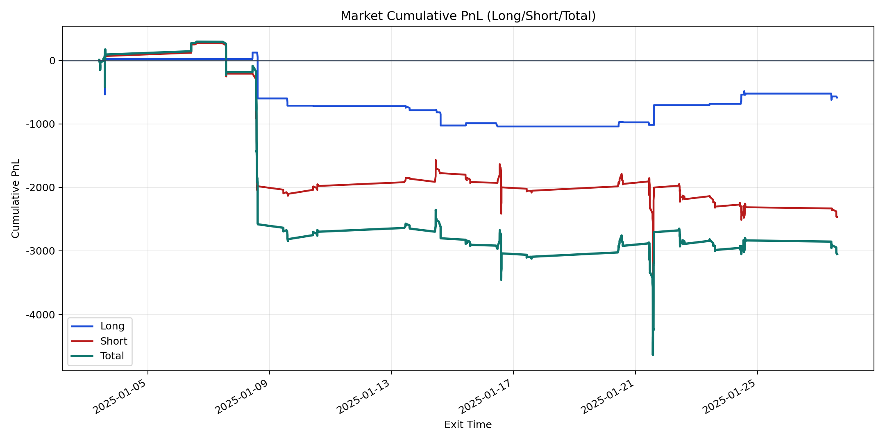
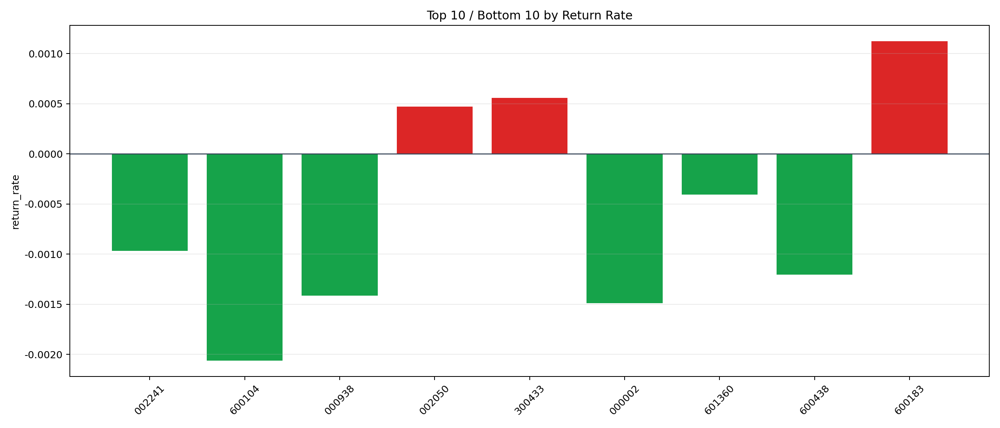

| repo_root | /home/haoranyou/data/output/alpha0.4_1w_5s_3ticks_index_filter/index_weights_300 |
|---|---|
| period_months | 1 |
| period_label | 2025-01-03_to_2025-01-27 |
| start_time | 2025-01-03 09:53:37 |
| end_time | 2025-01-27 14:42:17 |
| n_trades | 523 |
| n_symbols | 9 |
| total_pnl | -3049.247149999997 |
| long_total_pnl | -586.1070000000062 |
| short_total_pnl | -2463.1401499999915 |
| total_entry_notional | 4445296.0 |
| long_entry_notional | 867546.0 |
| short_entry_notional | 3577750.0 |
| total_return_rate | -0.0006859491808869414 |
| long_return_rate | -0.0006755918418158878 |
| short_return_rate | -0.0006884606666200801 |
| top_symbols_by_return | ["600183", "300433", "002050", "601360", "002241", "600438", "000938", "000002", "600104"] |
| bottom_symbols_by_return | ["600104", "000002", "000938", "600438", "002241", "601360", "002050", "300433", "600183"] |

